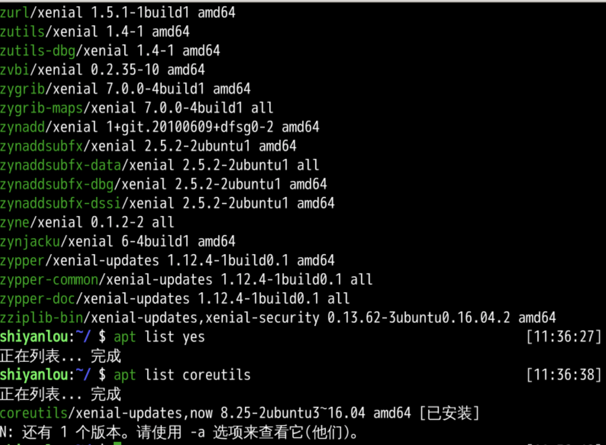
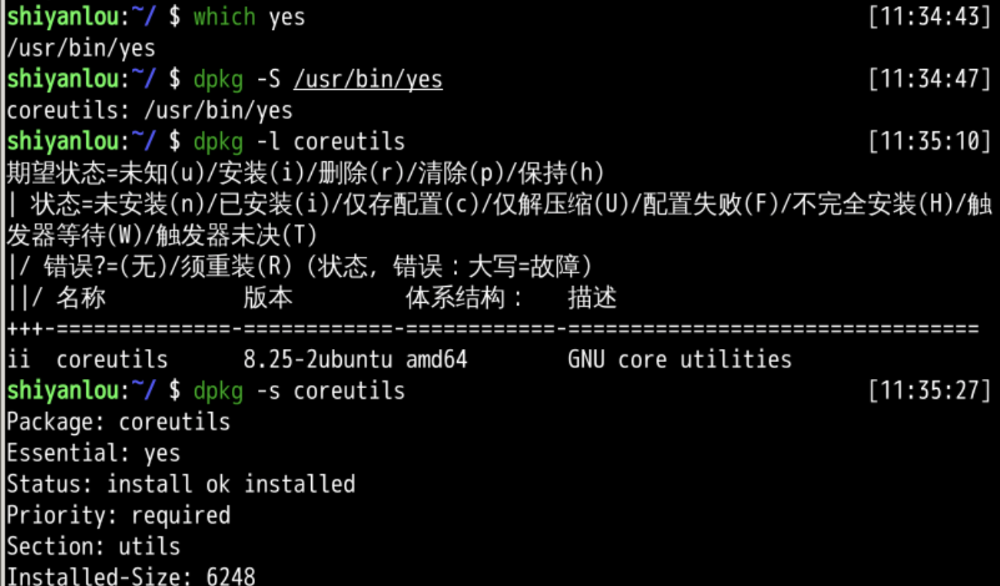
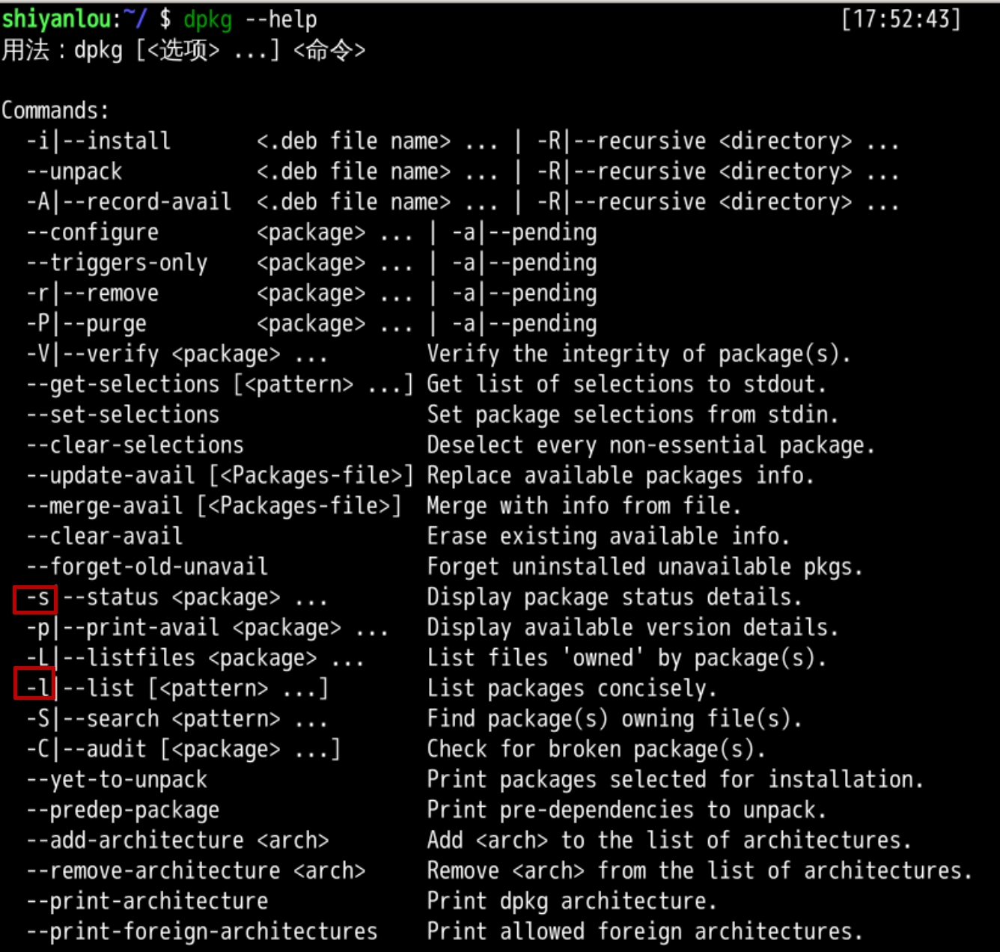
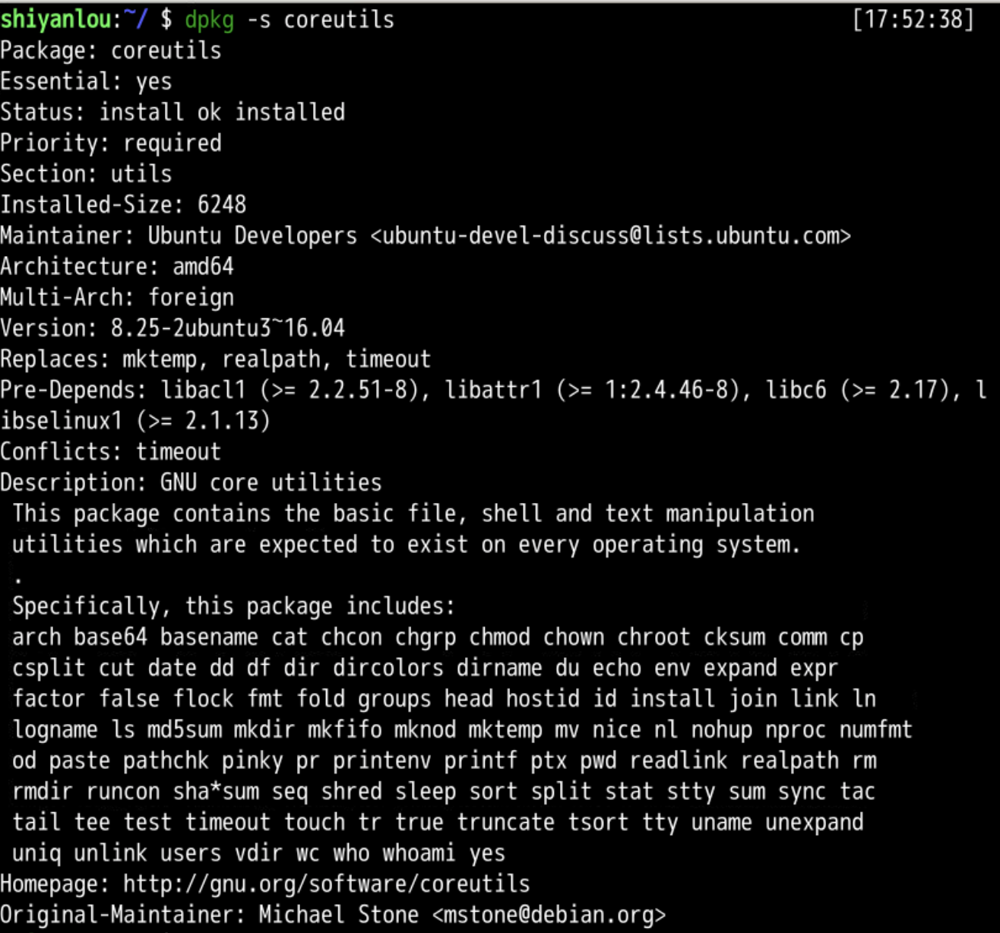
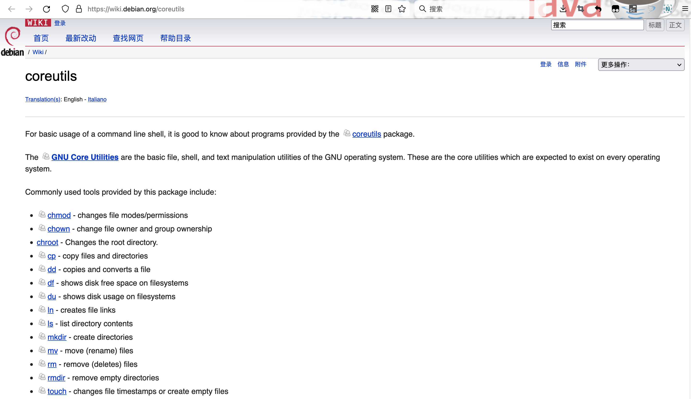
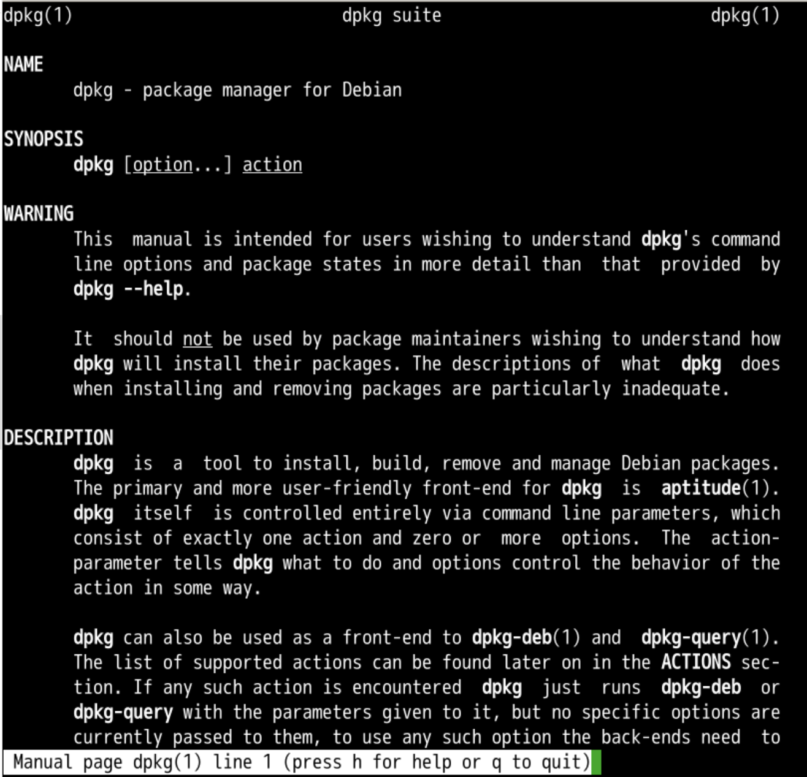

本章回顾
我们来回顾一下 😌
- 上一部分我们都讲了什么？🤔
- yes 命令
- 持续输出某字符串
yes oeasy
- 这yes有什么意义么？
- 写个c语言程序不是很容易么？
- 别着急
- 我们先往下看？😉

- 还有什么好玩的命令吗？🤔
列出所有包
apt list
- 好多文件啊
- 能找到yes命令么？
- 找不到啊

dpkg
# 找到 yes 对应位置
which yes
# /usr/bin/yes 属于哪个包
dpkg -S /usr/bin/yes
# 在已经安装的包里面找到 coreutils
# coreutils 到底是干什么的？
dpkg -l coreutils
# 在已安装列表中搜索 coreutils的状态
dpkg -s coreutils

yes命令属于coreutils包- 具体的命令就是可执行文件
- 他是被打到一个包里面的
- 包是存储在镜像站点的文件夹下的
- 如何查询dpkg命令的选项呢？
查看帮助

- 那么具体什么是coreutils呢？
coreutils

- coreutils
- core是核心
- utils是utilities应用
- 对应一些核心应用
- 是gnu制作的linux内核之上的一层
- 常用的命令都在这里
- 都有哪些命令呢？
包的细节

- https://wiki.debian.org/coreutils
- cat、ls、cp、mv、rm、mkdir都属于这个包
新的包管理方式
- dpkg 对应
- Debian Package 是传统包管理
- dpkg 更多的是本地包的各种安装卸载查看
- 早年间都是通过 ftp工具 将包整个下载到本地
- 再用 dkpg 安装
- 现在通过http
- 连下载带安装一条龙
- 用什么命令呢
apt
apt list coreutils
# 在源中搜索 coreutils
apt search coreutils
- apt 是新的包管理工具 😍
- apt 是 advanced package tools 的意思
- apt 是 debian 系发行版的软件包管理工具
- apt和dpkg有什么区别
- 先看dpkg
dpkg
- dpkg
- dpkg 是管理本地包安装卸载的
- apt 可以从远程镜像查询然后下载到本地并安装，一条龙的
- 软件获得方式
- dkpg没有使用互联网
- 通过光盘获取
- 借助ftp工具下载
- dkpg没有使用互联网

- 传统方式dkpg下载的东西还有可能不能用
工具链
- 得到的二进制文件可能不能用

- 软件包之间是有依赖关系的
- 这个软件包依赖的软件包不存在
- 甚至被依赖的软件包所依赖的软件包不存在
- 这就形成了一条链路
- 我们就需要把这条链路上所有的软件包都下载下来
- 有没有更便捷的方法呢？
总结
- 我们这里了解了dpkg
- 查看包(package)
- 安装包
- 这个命令是ubuntu从他的上游debian上获得的
- 不过下载包、管理包真的好麻烦
- 能否连下载带管理一条龙都给做了呢？
- 下回再说！👋